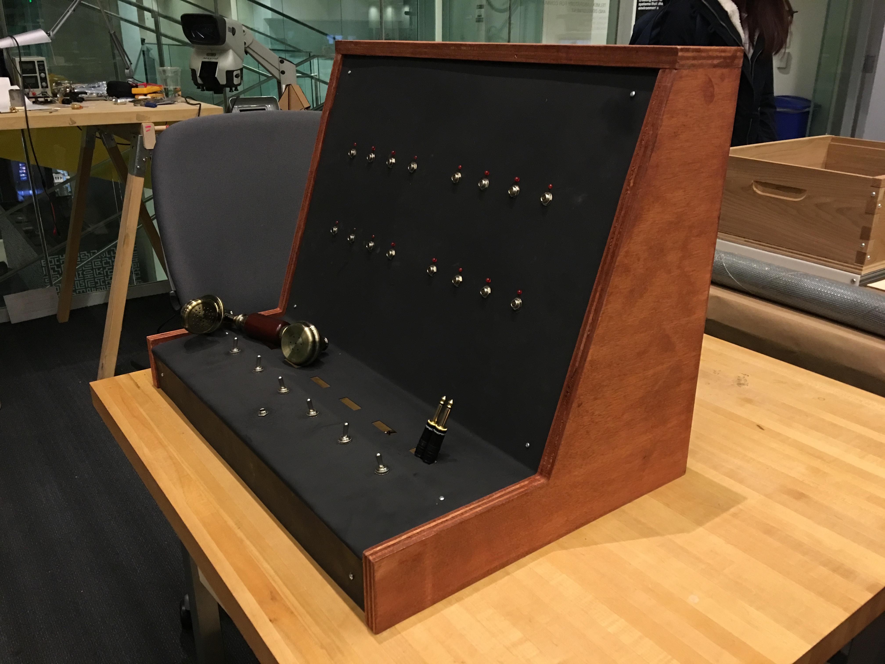

Hello Operator
A high-stakes game of telephone switchboard operation.
A million calls are made a day in this town. It's our job to make that happen.
Seems straight-forward, you might be thinking. Call comes in. They tell you the recipient. You connect the call, disconnect it when they're done. Nice and easy.
Hah. I doubt you'll survive your first day.
Hello Operator is a time management sim in the vein of Tapper or Diner Dash. You're tasked with working a manual telephone switchboard in the 1920s. Connecting a single call is easy; managing a dozen increasingly-impatient customers while you only have three or four phone lines is much harder!
The game itself is played using a custom-built replica of a physical telephone switchboard. You'll listen to callers using a vintage telephone handset, connect calls by physically connecting patch cables between ports, and receive feedback through a series of status LEDs.
{kind=link}
The physical controller is based on early- to mid-century Bell Systems switchboards, with additional design inspiration from modular synthesizers; the overarching design goal is to make something that fits your imagination of what a telephone switchboard looks like, rather than an actual historically-accurate switchboard.
The console is custom-built out of wood, machined steel, and professional audio components. The telephone handset is currently a plastic replica of a vintage model. It contains 16 inputs (plus the operator), and six pairs of weighted telephone cables and toggles (only 1 shown in the above photos).
Possible future work
The time management sim that currently exists for the hardware thrives on its simplicity: it's a translation of a well-established game genre to a new platform. As part of my academic research at the MIT Media Lab, I'm currently experimenting with introducing the ability to listen in on calls, which adds potential both for a surveillance mechanic and as a vehicle for nonlinear storytelling.